If you have any questions feel free to post them at the BDG Messageboard which can be found at the BDG website
TopThe Advisor is a script-driven application that should help the user navigate through the increasingly complex bdg configuration files. This is done by presenting several dialogue screens which directly relate to lines in the configuration files. Each dialogue presents an explantion of the line, a suggested value and even the possibility of ignoring that setting alltogether. The scripts are (relatively) simple XML files that can be created with notepad, so that everyone is able to write his own scripts.
Or, in Osram큦 words:
Think of the Advisor as a person that knows about (some of) the BoB config
files and that can help you with certain jobs. The Advisor can just do a
general check/update of your settings or answer more specific questions like
"How do I get more frames per second ?". The Advisor can also ask YOU
questions, for example whether you see stutter. After the interaction took
place, you can "save" to use the advice or you can decide to simply ignore it.
Upon first start, you will be confronted by this screen
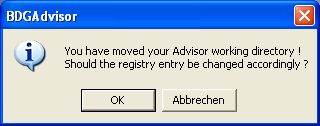
The Advisor stores its current location in the windows registry in order to ease access to used files.. just OK this warning. Please note that this message will appear everytime you move its location on your harddrive.
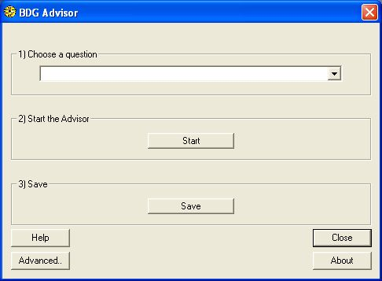
This is the main screen of the BDG Advisor, here you can select which script to execute, you can start a specific script and you can decide whether to save your changes ot to discard them. In addition, you can go to the Advanced Options Dialogue, or the About Dialogue. To top it off, the BDG even supplied a "Close" button to quit the screen !
A typical use-case looks like this:
If you press the "Close" button without saving first, the Advisor will ask you for confirmation:
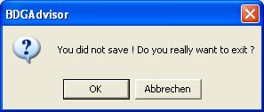
Note that some script files will save automatically, in which case you will quit without being asked for confirmation.
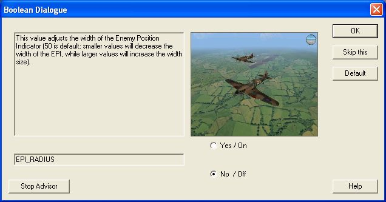
This dialogue type presents you a simple Yes/No or On/Off question. By pressing the "OK" button you will accept the current selection, pressing "Skip this" will make the program ignore the question, pressing "default" will reset the radioboxes to its suggested value. Pressing the "Stop Advisor" button will bring you immediately back to the main screen.
As you can hardly enter any invalid values in this screen, pressing "OK" will never bring up any error messages.
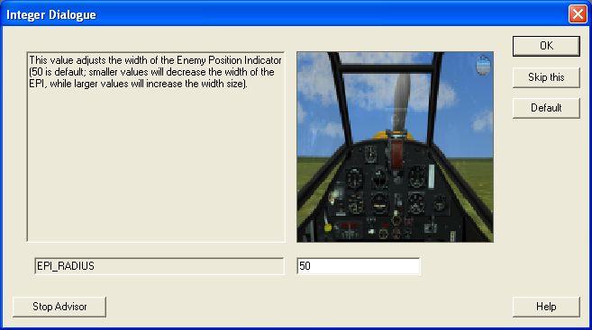
This dialogue lets you input an integer number. If you enter and invalid value, the Advisor will (well, should) get back to you with an error message. Ther rest of the interface is as with the float and boolean dialogues.
By pressing the "OK" button you will accept the current selection, pressing "Skip this" will make the program ignore the question, pressing "default" will reset the radioboxes to its suggested value. Pressing the "Stop Advisor" button will bring you immediately back to the main screen.
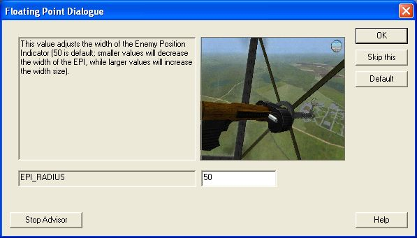
The "Floating Point Dialogue" prompts yout to enter a floating point variable (hence its name). By pressing the "OK" button you will accept the current selection, pressing "Skip this" will make the program ignore the question, pressing "default" will reset the radioboxes to its suggested value. Pressing the "Stop Advisor" button will bring you immediately back to the main screen.
Important: Take care to enter a '.' (period) as the decimal point, other characters (such as ',' will (at least) result in a truncation of the entered value (et '50,3' might become '50.0') or in an error message.
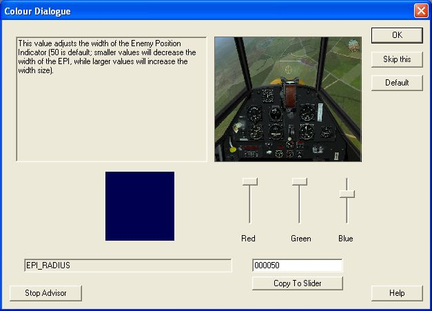
This dialogue is used to configure the label-colours inside the game. Those are defined as hexadecimal RGB (red green blue) values, where each colour can have a value between 0 (0x00 in hex) and 255 (0xFF). You can enter your desired choice either by using the 3 sliders on this screen or by entering the value directly and pressing the "Copy to slider" button. If you elect to do the latter, please note that you can omit leading zeores (eg '0000FF' is equal to 'FF').
The box to the left of the sliders will give you feedback on your current seleted colour, however note that, with the 'fading labels' option seleted, these colours might differ quite a bit while in-game (as they 'fade in' - become less transparent - with diminishing distance.
By pressing the "OK" button you will accept the current selection, pressing "Skip this" will make the program ignore the question, pressing "default" will reset the radioboxes to its suggested value. Pressing the "Stop Advisor" button will bring you immediately back to the main screen.
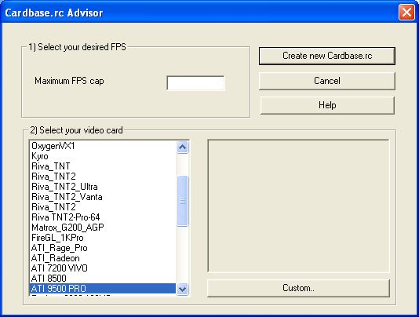
The cardbase dialogue is a graphical user interface for the "cardbase.rc" file, which includes various tweaks and settings for the multitude of grapics cards out there.
The first step is entering a 'maximum FPS (Frames Per Second) cap' value, which is the cure for most of the stuttering problems encountered in BoB. Entering a value between 25 and 40 might be a good idea, the minimum value is 1, the maximum possible value is 100. If you fail to enter a value (of if you enter an invalid one, you will be confronted by this (or a similar) screen:
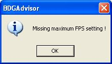
As the next step, you are required to select your graphics card:
Upon entering this screen, the Advisor will query your graphics card, and
generates a "DeviceID", which is then used to look up the card in a database.
Should the card be found, it will be marked in the list in the lower right
corner of the dialogue. Should no card be listed, please mark the card that
most closely matches your graphics card.
These two steps done, press "Create new cardbase.rc" and the file should be created in your "Battle of Britain" folder (which gets looked up automatically). If the saving was successful, you will see this message:
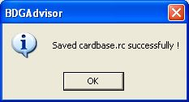
Pressing the "Cancel" button will bring you back to the main Advisor screen without creating a new cardbase.rc, pressing the "Custom" button brings you to the Custom CardBase Dialogue which will be discussed later.
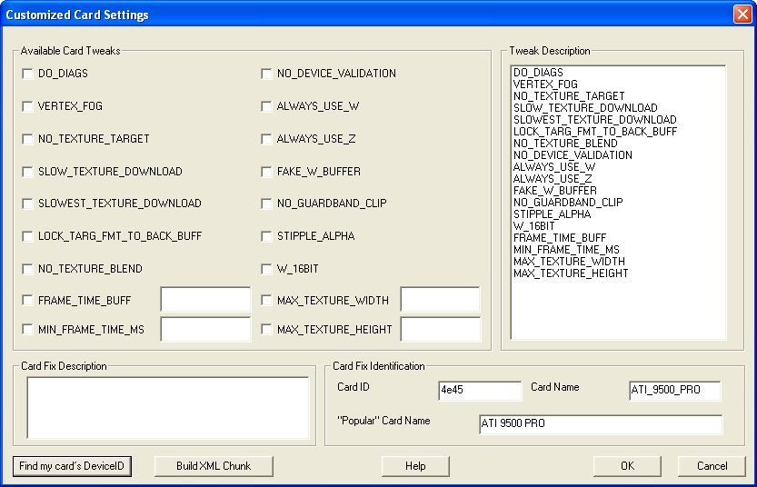
This screen is nothing for the faint of heard, and should not ordinarily be used by 'mere' users. Here one can create 'custom' card fixes and the corresponding entries for a XML script in order to 'enhance' the database of fixes.
In the upper left corner you see all available fixes which can be activated by checking the checkbox to the left of the fix. Note that the entries in the editboxes in the bottom four fixes is only evaluated if the corresponding checkbox is clicked ! By clicking on one of the entries in the list on the right you can get information from Rowan on the effects of specific fixes.
In the lower right corner you find editboxes regarding the 'identification' of a
specific fix:
A typical cardbase.rc line looks like this:
GeForce_DDR 0101 NO_TEXTURE_TARGET LOCK_TARG_FMT_TO_BACK_BUFF,
,the corresponding edit boxes in the dialogue screen are:
The big edit box in the lower left corner can be used to input the text that appears in the 'ordinary' cardbase.rc - here you can write what kind of fixes you added, what the preferred FPS cap might be etc..
Important: Note that the controls in this dialogue will be initialized with the fixes of the card currently marked in the 'ordinary' cardbase.rc dialogue (where you started this dialogue), this can be used to quickly generate multiple, slightly different fixes for a specific card (family?). A consequence of this is that (if you press "OK" or "Build XML chunk", see below) every change you do to this dialogue will carry back to the 'ordinary' cardbase.rc dialogue (but NOT into the advisor-xml-script), so take card if you really want to press 'create new cardbase.rc' once you are back in the 'ordinary' cardbase.rc screen.
The "Find my card큦 DeviceID" buttons in the lower border displays the DeviceID of your card, this number is used by BoB to look up the correct fix in the cardbase.rc
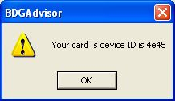
the "Build XML Chunk" button will create a file called "XMLChunk.xml" that includes a XML fragment with the your current fixes, ready to be pasted into the existing cardbase-advisor-script.
The "OK" button will take all your edits and apply them to the currently selected card, the "Cancel" button will discard all your changes.
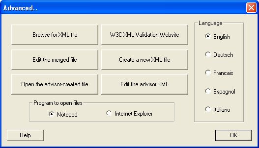
The main (and most commonly used) feature of this screen is the ability to configure the Advisor큦 language settings. This is done by clicking one of the radiobuttons on the right. On leaving this screen the setting will be saved in the system registry, so that the Advisor can remember your choice the next time you start it. Please note that currently only english and german are supported
The rest of this screen provides features for script-writers; the two radiobuttons on the bottom govern which program is used to open the various XML files, you can decide between notepad and internet explorer. The reason no other browsers are supported here is that XML files seem to be best displayed by this program, and the fact that the W3C Validation website seems only to work with IE).
The remaining six buttons on this screens have the following function (going clockwise, starting with the upper-left:
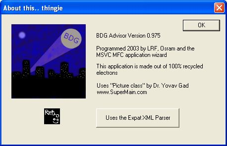
Displays version information and acknowlegdments. Clicking on the "Expat" button will take you to the project website.
Please note that this information is not necessarily totally up-to-date as the advisor is evolving rapidly.. I큞l try to consolidate it all once things have stabilized..
The Advisor is a little program that reads a script from a XML file and executes certain commands as specified in that file. The commands include instructions to pop up dialogue fields, to control the 'flow' of the instruction stream within the XML, and the automatic creation of text (without the user큦 knowledge/consent (ha!)). Here is what happens using a test file:
They are always 'well formed', which means that for every opening element (like ' <hello >') there must be a closing element ' </hello >' and sometimes 'valid', which means that they conform to a certain standard as defined by something called 'DTD' (or 'Schema' but that뭩 something different and not used here). A DTD tells whoever reads the XML how the different elements within the XML relate to each other, and which elements may be nested in other elements. Some elements have 'attributes', which means they look like this ' <hello mood="friendly" >'. You can see that an attribute always has a name and a value. Not all elements allow attributes of any value!
The root element HAS TO be called <Advisor >
Immediately after the root element HAS To come the <config > element which contains the elements 'file' (used to declare the file to merge the changes into), 'info' currently unused data-field, 'separator' and 'comment' Better not touch the latter two elements, just include '=' and '#' between them, respectively.
After the config element, your are pretty much free to do as you please.
However:
Using decision and choice elements you can confront the user with a decision. The flow through the script gets controlled by the return values of the selected sub-dialogue. E.g. if the start-choice contains a binary sub-dialogue, then the expected return values are ON or OFF, so you don뭪 really have to put elements into the default choice as it should not happen (expect in the case that you provide no ON or OFF choices ! But please note that you have to put in the default element IN ANY CASE! If your start choice contains an integer dialogue, then the possible return values are only limited by the actual limits of the integer-data type (something like +-1 million values or such), in case you didn뭪 specify allowed minimum and maximum values (more about this later)
A choice with for example "startfromfile=USE_HIRES_LANDSCAPE_TILES" means you split up the instruction flow depending on the current value in the bdg.txt of the variable "USE_HIRES_LANDSCAPE_TILES". Have a look at the sample script "My framerate is ok, I want higher quality.xml".
a choice can contain one or more dialogues, messages and auto elementsThe real meat of the Advisor, the dialogue elements provide the user with the means to interactively work his way through a configuration file. Dialogues may contain the following elements, IN THE FOLLOWING ORDER
Data located inside one of these elements will be written automatically into the output file. Use this for 'no-brainer' follow-up configuration settings.
This element allows you to pop up a message box displaying the data within the elements
By Retro (16:43 20.09.2003)